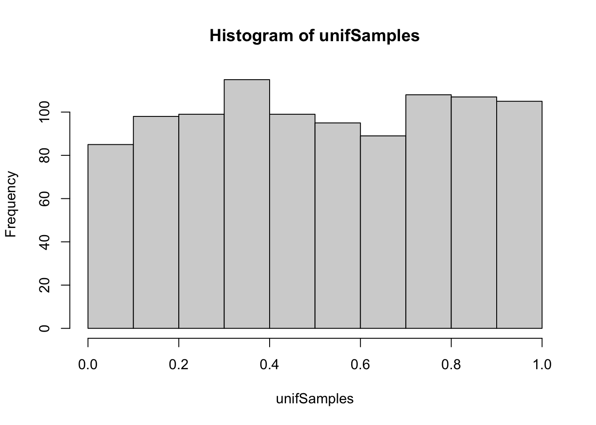
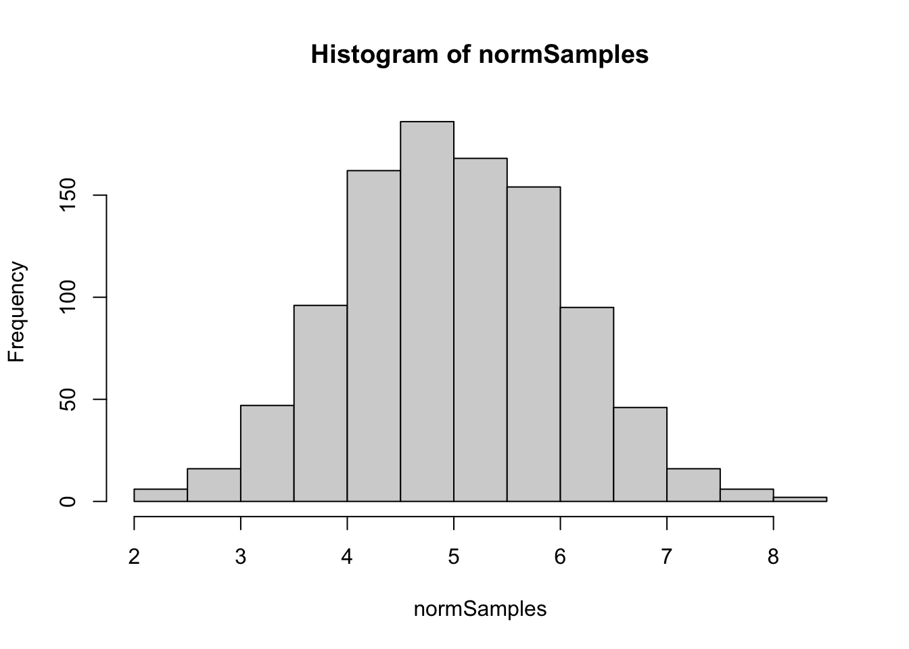
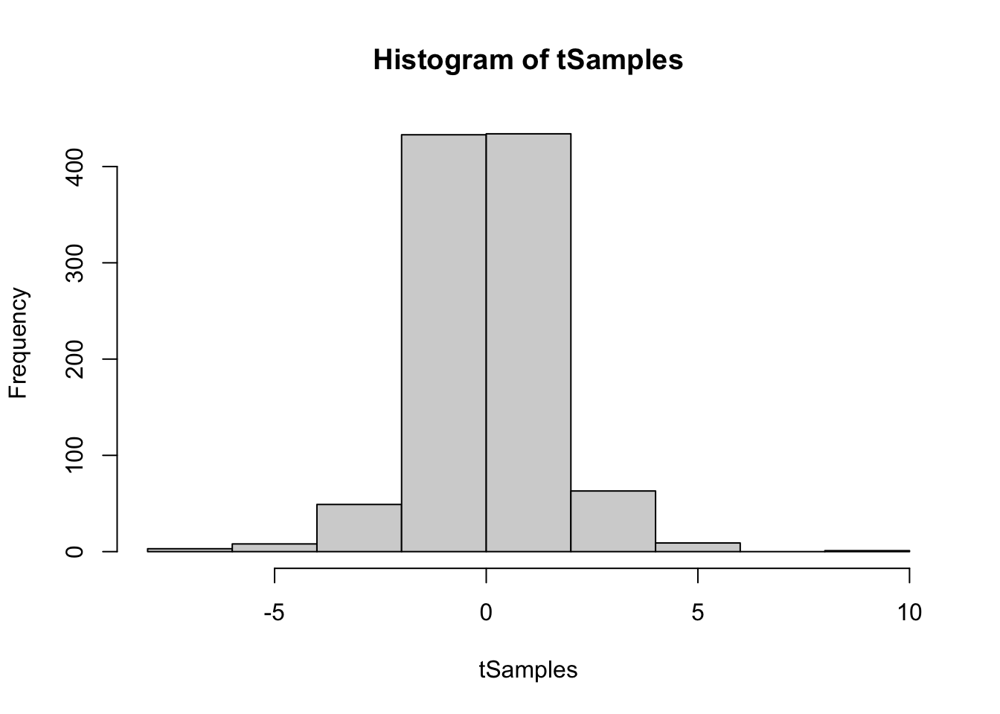
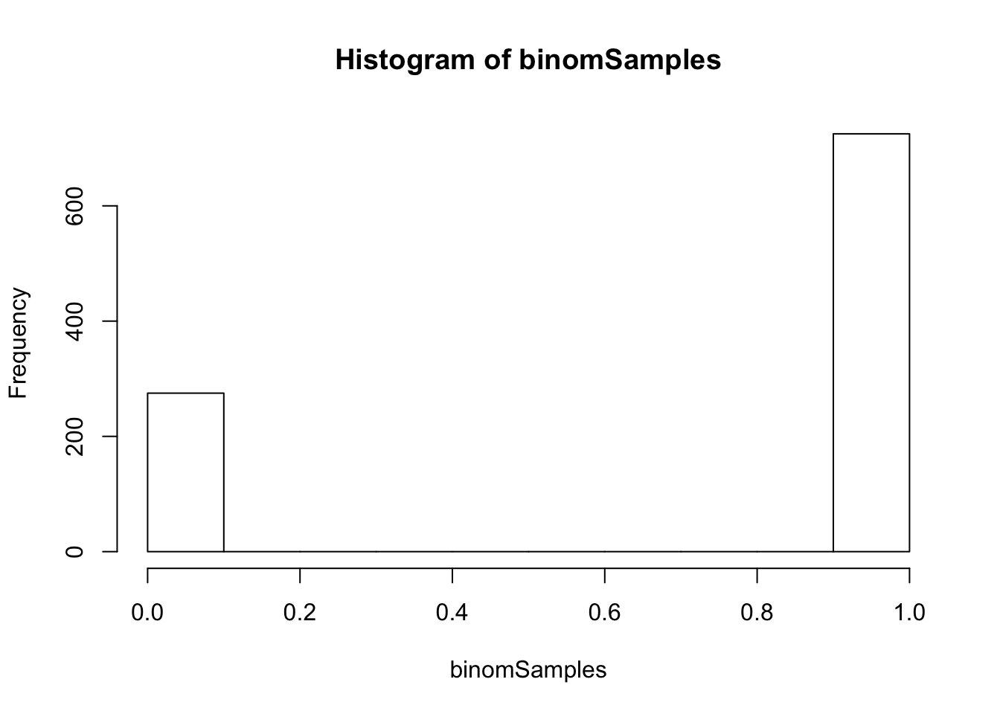
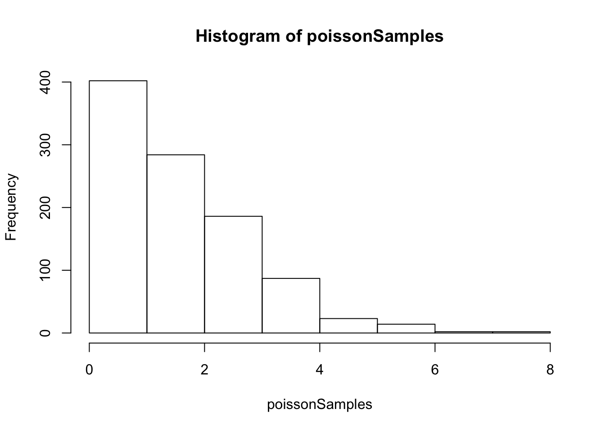
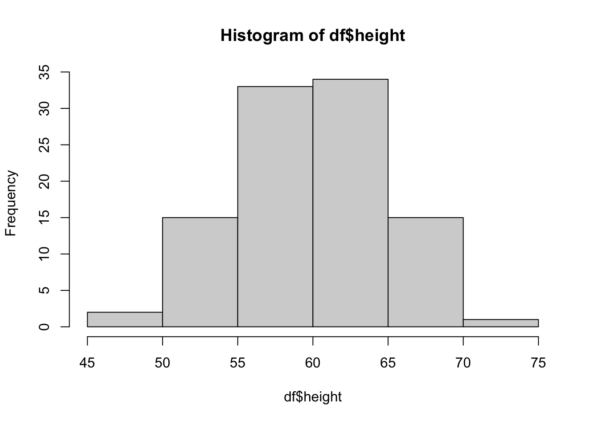
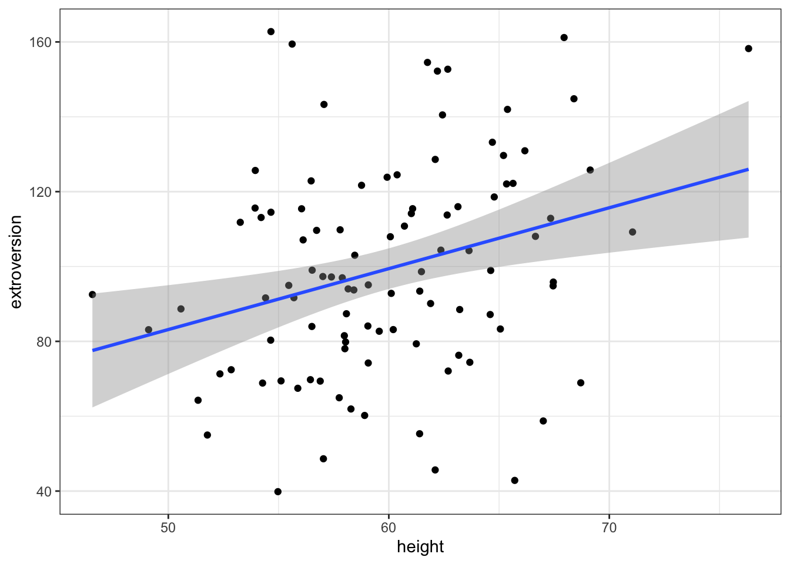
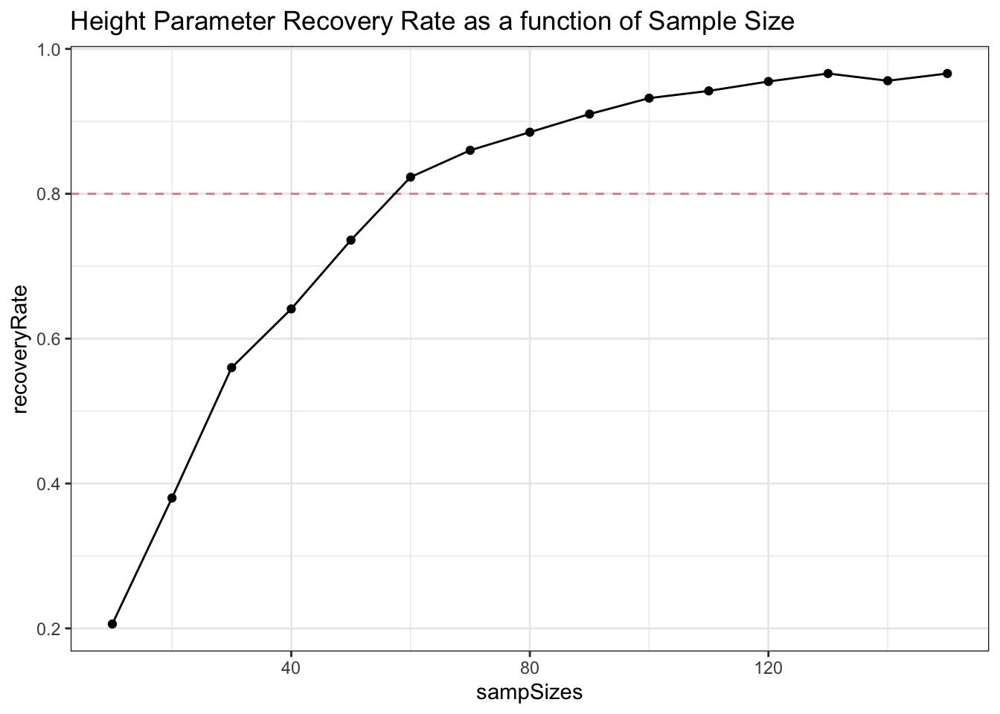
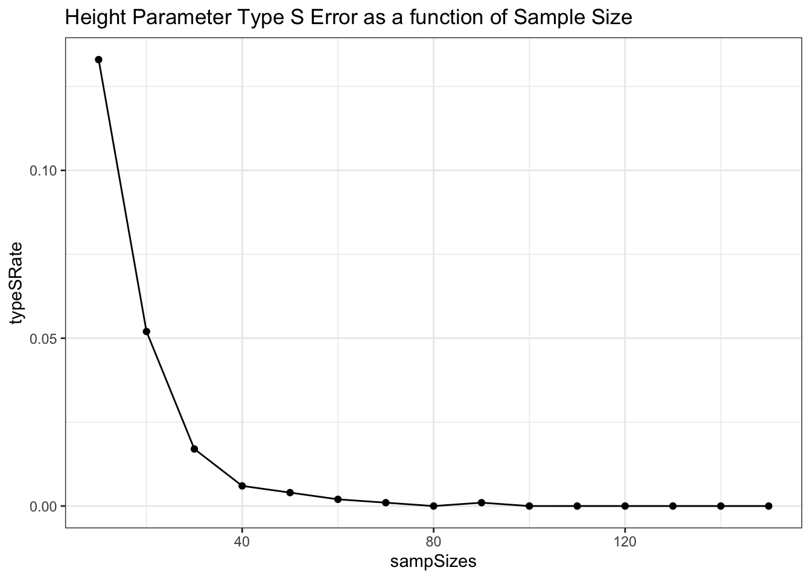

Basic Data Simulation & Power Analysis
Created by: Paul Bloom
extra
R
Links to Files
The files for all tutorials can be downloaded from the Columbia Psychology Scientific Computing GitHub page. This particular file is located here: /content/tutorials/r-extra/data-sim-power/basic-simulation-power.rmd.
Why Simulate?
Simulation is an extremely useful tool, because we can create ground truth by which to test our models. If we know the true process by which the data are generated, we can check whether our models are doing well at recovering this truth. This helps in many situations, including:
- Power analysis & sample size calculations
- Model tuning & checking
- Computational/modeling research
Basics of Data Simulation
R has some very useful functions for generating data ramdomly drawn from many different distributions.
Random samples drawn from cannonical distributions
Uniform distribution from 0 to 1
n <- 1000
unifSamples <- runif(n, min = 0, max = 1)
hist(unifSamples)
Normal distribution with mean 5 and sd 1
normSamples <- rnorm(n, mean = 5, sd = 1)
hist(normSamples)
Student’s t distribution with 4 degrees of freedom
tSamples <- rt(n, df =4)
hist(tSamples) Binomial distribution – 20 trials with success probability .37
binomSamples <- rbinom(n, size = 20, prob = .37)
hist(binomSamples)
Binomial distribution – 1 trials with success probability .74
binomSamples <- rbinom(n, size = 1, prob = .74)
hist(binomSamples)
Poisson Distribution with lambda = 2
poissonSamples <- rpois(n, lambda = 2)
hist(poissonSamples)
A simulated study
Now that we know some basics, let’s simulate a study! Lets say we want to know whether extroversion increases as a function of height. We will measure 100 individuals for both height and extraverson want to use a linear regression to estimate a possible linear relationship between the two measures.
First we can draw subjects ages from a uniform distribution
n <- 100
df <- tibble(id = 1:n,
height = rnorm(n, mean = 60, sd = 5))
hist(df$height)
Now, let’s create a ground truth for the simulated relationship between height and extroversion.
- Let’s set the ‘intercept’ (alpha) for a person of average height as an extroversion score of 100.
- Let’s set the ‘slope’ (beta) such that for two increase in 1 inch of height corresponds with a 2-point increase in extroversion, on average
- Let’s set the ‘noise’ to 25 – extroversion is influenced by many factors other than height so we’ll add normaly distributed error with a standard deviation of 25 to this simulation
alpha <- 100
beta <- 2
noise <- 25Now, let’s simulate these data!
We use the linear model \(Y = a + bX + error\)
Or \(extroversion = alpha + beta*height + noise\)
To do this, we can use extroversion = (n, rnorm(n, alpha + beta*heightMeanCentered, noise))
# we mean center height here, such that the intercept represents extroversion at the average height
df <- mutate(df,
heightMeanCentered = height - mean(height),
extroversion = rnorm(n, alpha + beta*heightMeanCentered, noise))Let’s visually inspect this relationship
ggplot(data = df, aes(x = height, y = extroversion)) +
geom_point() +
geom_smooth(method = 'lm') +
theme_bw()## `geom_smooth()` using formula 'y ~ x' Now let’s model this with a linear regression
mod <- lm(data = df, extroversion ~ heightMeanCentered)
arm::display(mod)## lm(formula = extroversion ~ heightMeanCentered, data = df)
## coef.est coef.se
## (Intercept) 99.30 2.73
## heightMeanCentered 1.63 0.54
## ---
## n = 100, k = 2
## residual sd = 27.35, R-Squared = 0.09So, did our model recover the parameters? Let’s say for the time being that if the ground truth value is contained within the 95% confidence interval (or approximately estimate +/- 2se) of the model, we’ve recovered the parameter. Looks like that is the case here!
However, this is just one random sampling of a dataset from our ground truth. To really see how well our model would fit, we will want to simulate many datasets and fit the model to them.
Simulate a bunch of studies!!
Note: This might take a while depending on the number of studies.
Below, we have some fancy tidy code (thanks Monica!) for generating nSims datatsets from the population parameters we set as ground truth, then running the same model on all of them. Datasets and models are all saved to one output dataframe
nSims <- 1000
# generate 2n id values, nSims times total
simOutputs <- crossing(nSim = 1:nSims,
id = 1:n) %>%
group_by(nSim) %>%
mutate(.,
height = rnorm(n, mean = 60, sd = 5),
heightMeanCentered = height - mean(height),
extroversion = rnorm(n, alpha + beta*heightMeanCentered, noise)) %>%
nest() %>%
mutate(mod = map(data, ~lm(extroversion ~ heightMeanCentered, data = .)))Now, we pull out all the coefs from each model
# extreme tidy magic to map coefs to a new column
simOutputs <- simOutputs %>%
mutate(coefs = map(mod, ~tidy(.)))
# Unnest coefs to long form
simOutLong <- simOutputs %>%
unnest(coefs) %>%
dplyr::filter(., !is.na(std.error)) %>%
mutate(.,
trueVal = case_when(
term == '(Intercept)' ~ alpha,
term == 'heightMeanCentered' ~ beta
))Now, we can plot the parameters and approximate 95% intervals (the parameter +/-2 std errors) for each of the simulated studies to visually inspect how well they are recovering ground truth
myplot <- ggplot(simOutLong) +
geom_hline(yintercept = 0, lty = 2) +
geom_errorbar(aes(x = nSim, ymin = estimate - 2*std.error, ymax = estimate + 2*std.error),
width = 0, alpha = .5) +
geom_point(aes(x = nSim, y = estimate), color = 'purple', size = 1) +
facet_wrap('term', scales = 'free_y') +
geom_hline(aes(yintercept = trueVal), lty = 2, color = 'red')
theme_bw()myplot
Looks like we’re doing well! The intercepts are all pretty close to 100 and the height parameters are grouped around 2. So on average, definitely recovering truth. But what about power?
Power Analysis
Let’s say we want to know the proportion of ‘studies’ under this scenario that recover our true effect. For our purposes here, we have two conditions that must be met:
- Our confidence interval from the model must contain the true parameter within a 95% confidence interval.
- Our 95% confidence interval from the model must exclude 0 – a significance test to determine whether the parameter meets threshold for us to believe it is a consistent effect
By combining both metrics as criteria, we are to an extent considering both ‘estimation precision’ and ‘significance’ in our definition of power.
Let’s calculate this here:
heightParameters <- dplyr::filter(simOutLong, term == 'heightMeanCentered') %>%
mutate(.,
lwr = estimate - 2*std.error,
upr = estimate + 2*std.error)
recoveryRate <- nrow(dplyr::filter(heightParameters,
beta < upr & beta > lwr & lwr > 0))/nrow(heightParameters)So, in this case, our ‘power’, or rate of sucessful parameter recovery, is 0.939.
It is also important to check for the rate of ‘type S’ errors, or errors where we have estimated the parameter to have the opposite sign from the true generating param. Anything more than a very low type S rate could be a serious issue.
typeSRate <- nrow(dplyr::filter(heightParameters,
estimate < 0))/nrow(heightParameters)Our type S rate is 0 here
Sample Size Calculation
Maybe we want to figure out how many participants we actually need in this study to achieve a suitable parameter recovery rate. So far we’re doing well in terms of power, but we also don’t want to potentially waste time and resources collecting extra data for an already well-powered study.
So, what we’ll do here is run 1000 simulated studies with different sample sizes, and plot the reovery and type S rate at each sample size. Lets try sample sizes at intervals of 10 from 10-150
sampSizes <- seq(from = 10, to = 150, by = 10)
nSims <- 1000
# Make an empty data frame for power at each sample size
powDF <- tibble(recoveryRate = rep(NA, length(sampSizes)), typeSRate =rep(NA, length(sampSizes)), sampSizes)
for (i in 1:length(sampSizes)){
n = sampSizes[i]
simOutputs = crossing(nSim = 1:nSims,
id = 1:n) %>%
group_by(nSim) %>%
mutate(height = rnorm(n, mean = 60, sd = 5),
heightMeanCentered = height - mean(height),
extroversion = rnorm(n, alpha + beta*heightMeanCentered, noise)) %>%
nest() %>%
mutate(mod = map(data, ~lm(extroversion ~ heightMeanCentered, data = .)))
simOutputs = simOutputs %>%
mutate(coefs = map(mod, ~tidy(.)))
# Unnest coefs to long form
simOutLong = simOutputs %>%
unnest(coefs) %>%
dplyr::filter(., !is.na(std.error))
heightParameters = filter(simOutLong, term == 'heightMeanCentered') %>%
mutate(lwr = estimate - 2*std.error,
upr = estimate + 2*std.error)
powDF$recoveryRate[i] = nrow(filter(heightParameters,
beta < upr & beta > lwr & lwr > 0))/nrow(heightParameters)
powDF$typeSRate[i] = nrow(filter(heightParameters,
estimate < 0))/nrow(heightParameters)
}Now, plot power and typeS curves as a function of sample size
ggplot(data = powDF, aes(x = sampSizes, y = recoveryRate)) +
geom_hline(yintercept = .8, lty = 2, alpha = .5, color = 'red') +
geom_line() +
geom_point() +
theme_bw() +
labs(title = 'Height Parameter Recovery Rate as a function of Sample Size') 
ggplot(data = powDF, aes(x = sampSizes, y = typeSRate)) +
geom_line() +
geom_point() +
theme_bw() +
labs(title = 'Height Parameter Type S Error as a function of Sample Size')
Depending on the power needs of our study (goals of 80% or 90% power are common), we can use this approach to approximate what our required sample size would be!
Of course, many of the models we want to use for our studies are more complex than the linear regression with 1 predictor we simulated here. The process of simulating data to match our hypothesized effects is often then iterative, sometimes requiring careful tuning and several different simulated ground truths to make sure that our models will work well under different possible patterns in the observed data.